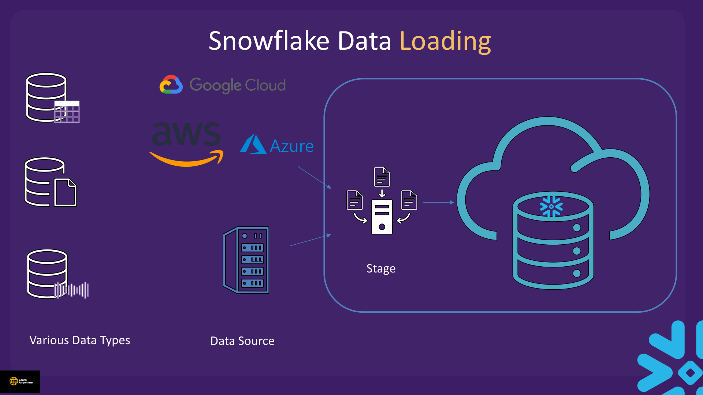
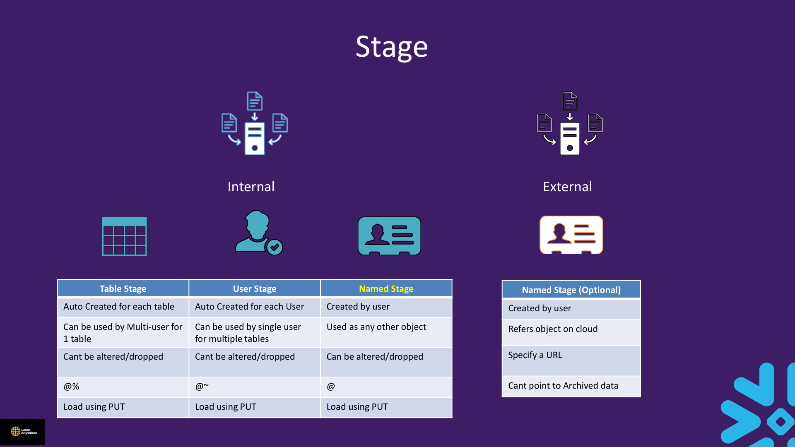
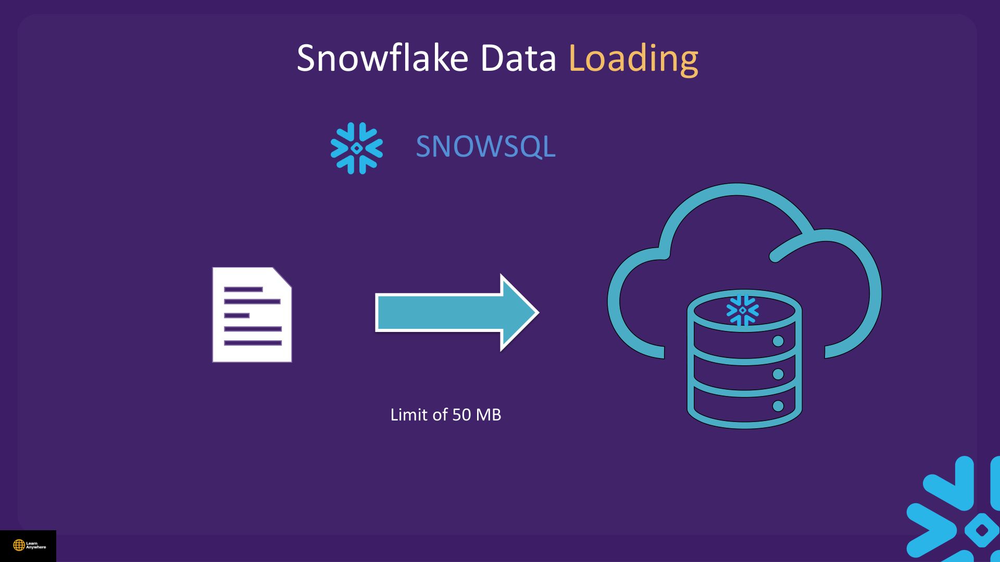
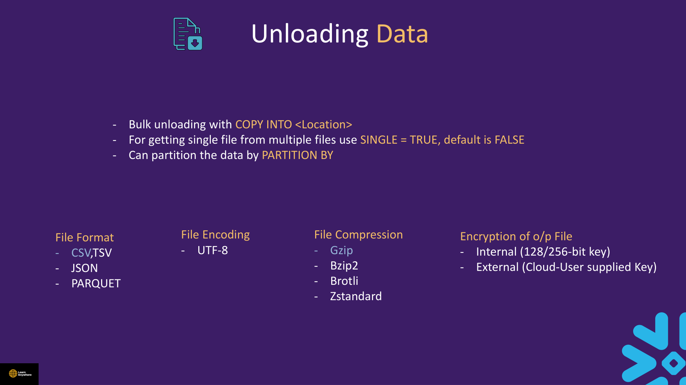

Lectures in this section
Every lecture below links to the notes that cover it.
- Data Loading : Concept 3:55
- Demo : Data Loading 12:57 Data Loading and Unloading/Data Loading.txt
- Snowflake CLI Installation 5:40
- Demo : Snowsql Data loading - User Stage 7:27 Data Loading and Unloading/User Stage - Snowsql.txt
- Demo : Type of Stages - Table Stage 3:01 Data Loading and Unloading/table stage snowsql.txt
- Demo : Type of Stages - Named Stage 3:04 Data Loading and Unloading/named stage snowsql.txt
- Snowflake Data Unloading 7:41 Data Loading and Unloading/Data Unloading.txt
- Data Loading And Unloading Quiz
Data Loading : Concept
Snowflake stores data in its own compressed micro-partition format. Before rows land in a table, source files usually sit in a stage — Snowflake's term for the location of data files in cloud storage. You describe the file structure with a file format, upload files with PUT, then run COPY INTO to load data into a table.

COPY INTO ingests them.COPY INTO is the loader that scans bags and places contents into the correct compartments.
Bulk load path
MOCK.csv
@stage_name
COPY INTO
Internal vs external stages
Stages are either internal (Snowflake-managed storage) or external (a reference to files already in your cloud bucket). All internal stage types accept uploads via PUT (SnowSQL or CLI).
| Stage type | Syntax | Created by | Scope | Can alter/drop? | Load with |
|---|---|---|---|---|---|
| Table stage | @%table_name |
Auto-created per table | Multi-user access for one table | No | PUT |
| User stage | @~ or @~/path |
Auto-created per user | Single user, many tables | No | PUT |
| Named stage | @stage_name |
User | Behaves like any other object; grantable | Yes | PUT |
| External stage | @ext_stage |
User | Points to cloud object storage via URL | Yes | No PUT — files already in cloud |

External stages reference objects already in S3, Azure Blob, or GCS. You specify a URL when creating the stage. External stages cannot point to archived storage classes (for example, S3 Glacier) — files must be in a readable storage tier.
PUT and GET are not available in Snowsight SQL worksheets — they run only in SnowSQL or the Snowflake CLI (snow stage copy). Snowsight can upload files via the UI (Data → Stages → Upload), but that path has a 50 MB per-file limit. Files larger than 50 MB require SnowSQL or the CLI. Bulk COPY INTO runs on your virtual warehouse and defaults to ON_ERROR = ABORT_STATEMENT.

File format objects, COPY options deep-dives, validation, and load-time transforms are covered in Section 5 — Advance Data Loading.
Demo : Data Loading
Course file: Data Loading and Unloading/Data Loading.txt
Sample data: data/MOCK.csv (~1,000 customer rows with header). Upload the file to a named stage first (SnowSQL, CLI, or Snowsight UI), then load with COPY INTO.
USE ROLE SYSADMIN;
USE WAREHOUSE compute_wh;
USE DATABASE la_db;
USE SCHEMA la_schema;
CREATE OR REPLACE TABLE customers (
customer NUMBER NOT NULL,
first_name VARCHAR NOT NULL,
last_name VARCHAR NOT NULL,
region VARCHAR NOT NULL,
email VARCHAR NOT NULL,
gender VARCHAR NOT NULL,
"order" NUMBER NOT NULL
);
CREATE OR REPLACE STAGE cust_stage
FILE_FORMAT = (TYPE = CSV FIELD_DELIMITER = ',' SKIP_HEADER = 1);
-- Upload MOCK.csv to @cust_stage via SnowSQL PUT or Snowsight UI first
-- PUT file://<local_path>/MOCK.csv @cust_stage AUTO_COMPRESS = FALSE;
LIST @cust_stage;
COPY INTO customers
FROM @cust_stage/MOCK.csv
FILE_FORMAT = (
TYPE = CSV,
SKIP_HEADER = 1,
FIELD_DELIMITER = ',',
TRIM_SPACE = FALSE,
FIELD_OPTIONALLY_ENCLOSED_BY = NONE
)
ON_ERROR = ABORT_STATEMENT
FORCE = TRUE;
SELECT COUNT(*) AS row_count FROM customers;- Forgetting
SKIP_HEADER = 1on CSV files with a header row — the header becomes row 1. - Quoting the reserved word column: use
"order"in DDL when the source CSV header isorder. - Running
PUTin a Snowsight worksheet — use SnowSQL, CLI, or the Snowsight Upload UI.
Snowflake CLI Installation
Install the Snowflake CLI for account management and file transfer from your local machine. It complements (and in some workflows replaces) the legacy SnowSQL client.
- SnowSQL: Legacy CLI — supports
PUT,GET, DML/DDL, and loading/unloading data. - Snowflake CLI: Modern CLI — use
snow stage copyto upload/download files between local disk and stages. - Connectors: Python, JDBC/ODBC for application pipelines.
-- SnowSQL upload (run outside Snowsight)
PUT file://<local_path>/MOCK.csv @stage_name AUTO_COMPRESS = FALSE;
-- Snowflake CLI equivalent
-- snow stage copy <local_path>/MOCK.csv @stage_name
-- Download
GET @stage_name file://<local_path>/unload;
-- snow stage copy @stage_name file://<local_path>/unloadPUT and GET are client-side file transfer commands. They do not appear in Snowsight SQL worksheets.
Connecting the CLI to your account
Installing snow only gives you the binary. Before it can run anything you have to tell it which account to talk to, and that is what a named connection is: a profile of account, user, credentials and session defaults, stored once in config.toml and referred to afterwards by name.
1 · Create the connection
snow connection add is interactive. Only the first handful of prompts matter for an ordinary password login — press Enter through the rest and the CLI leaves them unset.
C:\> snow connection add
Enter connection name: my_connection
Enter account: ABCDEFG-HI12345
Enter user: your_user
Enter password:
Enter role: accountadmin
Enter warehouse: compute_wh
Enter database: la_db
Enter schema: la_schema
Enter host:
Enter port:
Enter protocol:
Enter region:
Enter authenticator:
Enter workload identity provider:
Enter private key file:
Enter token file path:
Enter secondary roles:
Wrote new connection my_connection to C:\Users\<you>\AppData\Local\snowflake\config.tomlWhat each prompt is actually asking for:
| Prompt | What to enter | Needed? |
|---|---|---|
connection name | A local label of your choosing. You will pass this to --connection later. | Yes |
account | Your account identifier in orgname-accountname form, taken from the Snowsight account URL or the account menu. The older xy12345.region.cloud locator also works. | Yes |
user | The Snowflake login name, not your email, unless they happen to match. | Yes |
password | Typed hidden. Stored in config.toml in clear text — see the warning below. | For password auth |
role, warehouse, database, schema | Session defaults, exactly equivalent to running USE ROLE, USE WAREHOUSE and so on at the start of every session. Skipping them means every script has to set its own context. | Recommended |
host, port, protocol | Overrides for private connectivity or a proxy. Leave blank on a normal account — the CLI derives the host from the account identifier. | No |
region | Only for the legacy locator format that does not already embed the region. | No |
authenticator | externalbrowser for SSO, SNOWFLAKE_JWT for key-pair, username_password_mfa to cache an MFA token. Blank means plain password. | No |
workload identity provider | For federated workload identity from AWS, Azure, GCP or OIDC, so a job authenticates as its cloud identity rather than a stored secret. | No |
private key file | Path to the private key when using key-pair authentication. | Key-pair only |
token file path | File holding an OAuth or JWT token, typically injected by a container platform. | No |
secondary roles | all activates every role granted to the user alongside the primary role. | No |
%LOCALAPPDATA%\snowflake\config.toml. macOS and Linux: ~/.snowflake/config.toml. You can edit it by hand to add connections in bulk, and you can point the CLI somewhere else with SNOWFLAKE_HOME. On macOS and Linux the CLI refuses to read the file unless its permissions are 0600.
2 · Test it before you rely on it
snow connection test opens a real session and echoes back the context it resolved, which is the fastest way to catch a wrong account identifier or a role that does not have USAGE on the warehouse.
C:\> snow connection test --connection my_connection
+-----------------------------------------------------------+
| key | value |
|-----------------+-----------------------------------------|
| Connection name | my_connection |
| Status | OK |
| Host | ABCDEFG-HI12345.snowflakecomputing.com |
| Account | ABCDEFG-HI12345 |
| User | your_user |
| Role | ACCOUNTADMIN |
| Database | LA_DB |
| Warehouse | COMPUTE_WH |
+-----------------------------------------------------------+Note that the resolved values come back upper-cased. You typed la_db; Snowflake stores unquoted identifiers in upper case, and this table is showing you what the session actually resolved to rather than what you typed.
3 · Set a default, or pass the connection every time
This is the step people skip, and the failure is silent rather than loud:
C:\> snow sql --query "select 1 as d"
<-- nothing. No result, no error.
C:\> snow connection set-default my_connection
Default connection set to: my_connection
C:\> snow sql --query "select 1 as d"
select 1 as d
+---+
| D |
|---|
| 1 |
+---+With no default set and no --connection flag, there was nothing for the CLI to run the statement against, so it produced no output at all. Either set a default once, as above, or name the connection on every command with --connection my_connection (short form -c). In a script, being explicit is better — it survives someone else's machine having a different default.
C:\> snow connection list
+---------------------------------------------------------------------------------------+
| connection_name | parameters | is_default |
|-----------------+-----------------------------------------------------------+------------|
| my_connection | {'account': 'ABCDEFG-HI12345', 'user': 'your_user', | True |
| | 'password': '****', 'database': 'la_db', | |
| | 'schema': 'la_schema', 'warehouse': 'compute_wh', | |
| | 'role': 'accountadmin'} | |
+---------------------------------------------------------------------------------------+snow connection list masks the password in its output, but that is a display courtesy only — the value sits in config.toml in clear text.
4 · The commands you will actually use
| Command | What it does |
|---|---|
snow connection add | Create a named connection interactively. |
snow connection list | Show every connection and which one is the default. |
snow connection test -c <name> | Open a session and print the resolved context. |
snow connection set-default <name> | Use this connection when no -c is given. |
snow connection remove <name> | Delete it from config.toml. |
snow sql -q "SELECT 1" | Run one statement. |
snow sql -f script.sql | Run a whole file — this is how you script the labs in this section. |
snow sql -q "..." --format json | Machine-readable output for pipelines. csv is also available. |
snow stage copy ./MOCK.csv @my_stage | Upload — the CLI's equivalent of PUT. |
snow stage copy @my_stage ./download/ | Download — the equivalent of GET. |
snow object list table --in schema la_schema | Browse objects without writing SHOW statements. |
snow --info | Version, Python build and the config file path in use. First thing to run when something behaves oddly. |
Because the connection already carries a database and schema, snow sql starts in the right place:
C:\> snow sql -q "PUT file://C:/data/MOCK.csv @~/customers_user/staged AUTO_COMPRESS = FALSE"
C:\> snow sql -q "LIST @~"That is the practical reason the CLI matters for this section: PUT and GET cannot run in a Snowsight worksheet, so the stage demos below need either SnowSQL or snow.
UserWarning: Encoding mismatch detected. Run 'snow helpers detect-encoding' for more details. It is a warning about the encoding of config.toml, not a failure — the commands still run. Run snow helpers detect-encoding to see which file it objects to, then re-save that file as UTF-8 to silence it.
config.toml on anything but a personal laptop. It is stored unencrypted. For anything scheduled or shared, use key-pair authentication (authenticator = SNOWFLAKE_JWT with private_key_file) or supply the secret from the environment instead of the file — the CLI reads SNOWFLAKE_CONNECTIONS_<NAME>_PASSWORD, uppercased, for each field. Snowflake is also phasing out single-factor password sign-in, so key-pair is where CLI and service-account access is heading regardless.
snow connection add \
--connection-name ci \
--account ABCDEFG-HI12345 \
--user svc_ci \
--authenticator SNOWFLAKE_JWT \
--private-key-file /secrets/snowflake_key.p8 \
--role loader_role \
--warehouse etl_wh \
--database la_db \
--schema la_schema \
--no-interactiveDemo : Snowsql Data loading - User Stage
Course file: Data Loading and Unloading/User Stage - Snowsql.txt
USE ROLE SYSADMIN;
USE WAREHOUSE compute_wh;
USE DATABASE la_db;
USE SCHEMA la_schema;
CREATE OR REPLACE TABLE customers_user (
customer NUMBER NOT NULL,
first_name VARCHAR NOT NULL,
last_name VARCHAR NOT NULL,
region VARCHAR NOT NULL,
email VARCHAR NOT NULL,
gender VARCHAR NOT NULL,
"order" NUMBER NOT NULL
);
-- Run in SnowSQL or CLI — not Snowsight SQL
-- PUT file://<local_path>/MOCK.csv @~/customers_user/staged AUTO_COMPRESS = FALSE;
-- PUT file://<local_path>/MOCK1.csv @~/customers_user/staged AUTO_COMPRESS = FALSE OVERWRITE = TRUE;
LIST @~;
COPY INTO customers_user
FROM @~/customers_user/staged
FILE_FORMAT = (TYPE = CSV SKIP_HEADER = 1)
PURGE = FALSE;@~): Private to your login. Good for quick personal uploads. Recommended compressed upload size: 100–250 MB per file for best performance.
PURGE = TRUE, which deletes stage files after load — risky in labs where you may want to re-run. Use PURGE = FALSE unless you intentionally want files removed.
Demo : Type of Stages - Table Stage
Course file: Data Loading and Unloading/table stage snowsql.txt
CREATE OR REPLACE TABLE customers_table (
customer NUMBER NOT NULL,
first_name VARCHAR NOT NULL,
last_name VARCHAR NOT NULL,
region VARCHAR NOT NULL,
email VARCHAR NOT NULL,
gender VARCHAR NOT NULL,
"order" NUMBER NOT NULL
);
LIST @%customers_table;
-- Run in SnowSQL or CLI
-- PUT file://<local_path>/MOCK.csv @%customers_table/staged AUTO_COMPRESS = FALSE;
COPY INTO customers_table
FROM @%customers_table/staged
FILE_FORMAT = (TYPE = CSV SKIP_HEADER = 1)
PURGE = FALSE;Table stages are automatically created when the table exists. Syntax: @%table_name. Each table gets exactly one table stage.
Demo : Type of Stages - Named Stage
Course file: Data Loading and Unloading/named stage snowsql.txt
CREATE OR REPLACE TABLE customers_named (
customer NUMBER NOT NULL,
first_name VARCHAR NOT NULL,
last_name VARCHAR NOT NULL,
region VARCHAR NOT NULL,
email VARCHAR NOT NULL,
gender VARCHAR NOT NULL,
"order" NUMBER NOT NULL
);
CREATE OR REPLACE STAGE internal_named_stage
FILE_FORMAT = (TYPE = CSV FIELD_DELIMITER = ',' SKIP_HEADER = 1);
SHOW STAGES;
-- Run PUT in SnowSQL or CLI
-- PUT file://<local_path>/MOCK.csv @internal_named_stage AUTO_COMPRESS = FALSE;
-- PUT file://<local_path>/MOCK1.csv @internal_named_stage AUTO_COMPRESS = FALSE OVERWRITE = TRUE;
LIST @internal_named_stage;
COPY INTO customers_named
FROM @internal_named_stage
FILE_FORMAT = (TYPE = CSV SKIP_HEADER = 1)
PURGE = FALSE;internal_named_stage1 but uploads to @internal_named_stage (different name). The cleaned SQL above uses one consistent name.
Snowflake Data Unloading
Course file: Data Loading and Unloading/Data Unloading.txt
Unloading reverses the load path. Use COPY INTO <location> FROM <table> to write table data to stage files. For an internal stage, download with GET (SnowSQL) or snow stage copy (CLI). For an external stage, COPY INTO writes directly to your cloud bucket — no GET step.
Unload options
Bulk unloading uses COPY INTO <location>. Set SINGLE = TRUE to force one output file instead of many parallel shards (FALSE is the default). Use PARTITION BY <col> to split output by column values.
| Option category | Supported values |
|---|---|
| File format | CSV/TSV, JSON, Parquet |
| File encoding | UTF-8 |
| Compression | Gzip, Bzip2, Brotli, Zstandard |
| Encryption | Internal (128/256-bit key) or external (customer-supplied cloud key) |

SINGLE = TRUE.GET / snow stage copy
SELECT COUNT(*) FROM customers_named;
COPY INTO @internal_named_stage
FROM customers_named
FILE_FORMAT = (TYPE = CSV COMPRESSION = NONE)
OVERWRITE = TRUE
HEADER = TRUE;
LIST @internal_named_stage;
-- Run in SnowSQL or CLI — not Snowsight SQL
-- GET @internal_named_stage file://<local_path>/unload;
REMOVE @internal_named_stage;
-- Partitioned unload by region
CREATE OR REPLACE STAGE internal_named_stage_partition
FILE_FORMAT = (TYPE = CSV COMPRESSION = NONE);
COPY INTO @internal_named_stage_partition
FROM customers_named
PARTITION BY region
FILE_FORMAT = (TYPE = CSV COMPRESSION = NONE);
LIST @internal_named_stage_partition;
-- Single large output file (up to ~5 GB)
COPY INTO @internal_named_stage
FROM customers_named
FILE_FORMAT = (TYPE = CSV COMPRESSION = NONE)
OVERWRITE = TRUE
HEADER = TRUE
SINGLE = TRUE
MAX_FILE_SIZE = 4900000000;REMOVE files. External unloads to S3/Azure/GCS also incur cloud egress — see Section 7.
Practical Lab — End-to-End with MOCK.csv
MOCK1.csv is identical except row 2 has a non-numeric order value — useful for testing error handling in Section 5.
Cleanup
REMOVE @internal_named_stage;
DROP TABLE IF EXISTS customers_named;
DROP STAGE IF EXISTS internal_named_stage;
DROP STAGE IF EXISTS internal_named_stage_partition;Cost notes
Loading 1,000 rows on X-Small costs fractions of a credit. Staged files incur storage charges until removed. Avoid PURGE = TRUE in labs unless you intentionally want stage files deleted on load.
Data Loading And Unloading Quiz
- What are the three internal stage types and their syntax?
- Where can you run
PUTandGET? - What is the default
ON_ERRORbehaviour for bulkCOPY INTO? - Which stage type is recommended for production loads?
- How do you unload a table to CSV files with headers?
@~, table @%name, named @name. Named stages are grantable and reusable. Unload with COPY INTO @stage FROM table + HEADER = TRUE; download with GET or CLI.
Interview questions
Try to answer each one before opening it.
What are the three internal stage types, their syntax, and when would you use each?Fundamentals
User stage — @~ or @~/path; private to your login; quick personal uploads, not shareable. Table stage — @%table_name; one per table, auto-created when the table exists; ad-hoc loads for that specific table. Named stage — @stage_name; first-class grantable object with optional attached file format; recommended for production, Snowpipe, and team workflows. All three are internal stages backed by Snowflake-managed storage.
Why are PUT and GET unavailable in Snowsight worksheets, and what should you use instead?Gotcha
PUT and GET are client-side file transfer commands that run in SnowSQL or the Snowflake CLI (snow stage copy), not server-side SQL. Snowsight worksheets execute SQL against Snowflake's engine — they cannot access your local filesystem. Upload via SnowSQL/CLI PUT, CLI snow stage copy, or the Snowsight UI (Data → Stages → Upload). Download with GET or CLI after unloading to a stage.
You run snow sql -q "select 1" and get no output and no error. Why?Gotcha
The CLI had no connection to run it against. A named connection exists in config.toml only once you create it, and it is used only if you either mark it as the default with snow connection set-default <name> or name it explicitly with -c <name> on the command. Miss both and the statement goes nowhere quietly, which makes it look like the query returned nothing.
Diagnose it with snow connection list, which shows every profile and an is_default column, and snow connection test -c <name>, which opens a real session and prints the resolved account, role, warehouse and database. In scripts, always pass -c explicitly rather than relying on whatever default the machine happens to have.
What file size does Snowflake recommend for best load performance?Fundamentals
For compressed uploads, aim for roughly 100–250 MB per file for optimal parallelism during COPY INTO. Very small files create overhead; very large files reduce parallelism. The course uses MOCK.csv (~1,000 rows) for learning — far below that range, which is fine for labs but not representative of production bulk loads. Split large datasets into multiple files in that size band when loading at scale.
What does load metadata do, and why does a re-run of COPY INTO load zero rows?Fundamentals
Snowflake tracks which files have already been loaded into a table. On a subsequent COPY INTO with the same files, it skips them and reports zero new rows loaded — the metadata shows the file was already ingested. To force a reload, use FORCE = TRUE (as in the course demo). This prevents accidental duplicate loads in production pipelines but surprises people in labs who expect idempotent re-runs to append again.
How do the loading and unloading data paths differ?Comparison
Loading: local file → PUT/UI upload → stage → COPY INTO table FROM @stage → table micro-partitions. Unloading: table → COPY INTO @stage FROM table → stage files → GET/CLI download → local disk. Loading consumes warehouse credits to parse and write micro-partitions; unloading consumes warehouse credits to read and serialise rows. Both can incur stage storage charges until you REMOVE staged files.
What do HEADER, SINGLE, PARTITION BY, and MAX_FILE_SIZE do on unload?SQL
HEADER = TRUE writes a column-name header row in each output file. SINGLE = TRUE forces one output file instead of many parallel shards (subject to size limits). PARTITION BY <col> splits output into subdirectories/files grouped by column values (for example, one folder per region). MAX_FILE_SIZE caps bytes per file — the course demo uses 4900000000 (~4.9 GB) with SINGLE = TRUE to produce one large CSV up to Snowflake's per-file limit.
Why does unloading cost both compute and storage?Cost
COPY INTO @stage FROM table runs on your virtual warehouse — reading and serialising rows consumes compute credits just like a query. The resulting files sit in the stage until removed, billing at the normal storage rate. External unloads to customer-owned cloud buckets also incur cloud egress. Always REMOVE @stage after downloading in labs to avoid ongoing storage charges.
What happens if you forget SKIP_HEADER = 1 when loading a CSV with a header row?Gotcha
The header line is loaded as row 1 — string values like customer and first_name land in numeric or typed columns and cause a type conversion error (with default ON_ERROR = ABORT_STATEMENT) or silently bad data if errors are tolerated. Always match file format to file structure. The course MOCK.csv has a header row, so both the stage default and inline COPY file format need SKIP_HEADER = 1.
Why must the reserved column order be quoted in DDL when loading MOCK.csv?Gotcha
ORDER is a SQL reserved word. Unquoted identifiers are stored uppercase, but the CSV header is lowercase order. In the table DDL you must quote it as "order" to create a column that matches the source file and avoids parser conflicts. Omitting quotes can cause DDL errors or column mismatches during COPY INTO. This pattern applies whenever source headers collide with Snowflake reserved keywords.
What is the difference between table, user, and named internal stages?Comparison
Table stage (@%name) is auto-created per table, shared by any user loading that one table, and cannot be altered or dropped. User stage (@~) is auto-created per user, private to that login for uploads across many tables, and also cannot be altered or dropped. Named stage (@name) is a first-class object you create, grant, alter, and drop like any other Snowflake object — recommended for production. All three accept PUT; external stages instead point to cloud URLs and skip PUT.
What is Snowsight's file upload limit and what should you use instead?Gotcha
Snowsight's browser upload UI caps files at 50 MB. Anything larger — or anything you want to script in CI — must go through SnowSQL (PUT) or the Snowflake CLI (snow stage copy). Both are client-side commands that run outside Snowsight worksheets. After upload, COPY INTO from the stage runs on your warehouse as usual.
Hands-on practice
Run these in a trial account on an X-Small warehouse with AUTO_SUSPEND = 60. Clean up when you finish.
-
Set the Snowflake CLI up from scratch: create a named connection for your trial account, prove it works, make it the default, then run a query through it. Before setting the default, deliberately run
snow sql -q "select 1 as d"with no-cflag so you see the silent-failure behaviour for yourself.The bare
snow sqlprints nothing. Afterset-default, the same command returns a one-row table containing1, andsnow connection listshowsis_default = True.Show solutionSQL
# Create the profile (interactive - answer the prompts) snow connection add # Prove it reaches the account and resolves the right context snow connection test --connection my_connection # Before: no default and no -c, so nothing runs snow sql -q "select 1 as d" # After: make it the default, then the same command works snow connection set-default my_connection snow sql -q "select 1 as d" # Confirm what is stored and which profile is default snow connection list # Equivalent without touching the default at all snow sql -c my_connection -q "select current_role(), current_warehouse()" -
Create the
customerstable and named stagecust_stagefrom the loading demo. UploadMOCK.csvvia SnowSQLPUTor the Snowsight Upload UI, then runCOPY INTO customers FROM @cust_stage/MOCK.csvwithSKIP_HEADER = 1andFORCE = TRUE.SELECT COUNT(*) FROM customersreturns 1000 rows.LIST @cust_stageshows the uploaded file.Show solutionSQL
USE ROLE SYSADMIN; USE WAREHOUSE compute_wh; USE DATABASE la_db; USE SCHEMA la_schema; CREATE OR REPLACE TABLE customers ( customer NUMBER NOT NULL, first_name VARCHAR NOT NULL, last_name VARCHAR NOT NULL, region VARCHAR NOT NULL, email VARCHAR NOT NULL, gender VARCHAR NOT NULL, "order" NUMBER NOT NULL ); CREATE OR REPLACE STAGE cust_stage FILE_FORMAT = (TYPE = CSV FIELD_DELIMITER = ',' SKIP_HEADER = 1); -- Upload MOCK.csv via SnowSQL PUT or Snowsight UI first -- PUT file://<local_path>/MOCK.csv @cust_stage AUTO_COMPRESS = FALSE; LIST @cust_stage; COPY INTO customers FROM @cust_stage/MOCK.csv FILE_FORMAT = ( TYPE = CSV, SKIP_HEADER = 1, FIELD_DELIMITER = ',', TRIM_SPACE = FALSE, FIELD_OPTIONALLY_ENCLOSED_BY = NONE ) ON_ERROR = ABORT_STATEMENT FORCE = TRUE; SELECT COUNT(*) AS row_count FROM customers; -
Run the same
COPY INTOagain withoutFORCE = TRUE. Confirm how many rows load on the second run.The second
COPY INTOloads 0 rows — Snowflake skips the file because load metadata shows it was already ingested.Show solutionSQL
COPY INTO customers FROM @cust_stage/MOCK.csv FILE_FORMAT = ( TYPE = CSV, SKIP_HEADER = 1, FIELD_DELIMITER = ',' ); -- Check COPY result: rows_loaded = 0 -
Unload
customersto@cust_stagewithHEADER = TRUE, then run a partitioned unload byregionto a new stagecust_stage_partition. List both stages.Unloaded CSV files appear in each stage. Partitioned unload creates separate files or paths per distinct
regionvalue. This consumes a small amount of warehouse compute and stage storage.Show solutionSQL
COPY INTO @cust_stage FROM customers FILE_FORMAT = (TYPE = CSV COMPRESSION = NONE) OVERWRITE = TRUE HEADER = TRUE; CREATE OR REPLACE STAGE cust_stage_partition FILE_FORMAT = (TYPE = CSV COMPRESSION = NONE); COPY INTO @cust_stage_partition FROM customers PARTITION BY region FILE_FORMAT = (TYPE = CSV COMPRESSION = NONE); LIST @cust_stage; LIST @cust_stage_partition; -
Unload
customersto an internal stage withSINGLE = TRUEandHEADER = TRUE, then download the file with SnowSQLGETorsnow stage copy. Confirm the CSV has a header row.One output file in the stage (unless row count forces splitting). Downloaded CSV opens with column names in row 1.
Show solutionSQL
COPY INTO @cust_stage FROM customers FILE_FORMAT = (TYPE = CSV COMPRESSION = NONE) OVERWRITE = TRUE HEADER = TRUE SINGLE = TRUE; LIST @cust_stage; -- SnowSQL or CLI (not Snowsight SQL): -- GET @cust_stage file://<local_path>/unload; -
Clean up: remove files from both stages, then drop the stages and the
customerstable.Stages and table are dropped.
LIST @cust_stageerrors or returns empty after removal and drop.Show solutionSQL
REMOVE @cust_stage; REMOVE @cust_stage_partition; DROP TABLE IF EXISTS customers; DROP STAGE IF EXISTS cust_stage; DROP STAGE IF EXISTS cust_stage_partition;
Recap
- Load path: data source → stage (
PUT) → table (COPY INTO). - Internal stages: table (
@%, auto, multi-user, no drop), user (@~, auto, single-user, no drop), named (@, user-created, alter/drop OK). - External stages point to cloud URLs; no
PUT; cannot use archived storage classes. - Snowsight upload limit 50 MB; larger files need SnowSQL or CLI.
PUT/GETunavailable in Snowsight SQL; use SnowSQL, CLI, or Snowsight UI upload.- Bulk
COPY INTOdefaults toON_ERROR = ABORT_STATEMENT; runs on warehouse credits. - Use
SKIP_HEADER = 1for CSV headers; quote reserved column names like"order". - Unload internal:
COPY INTO @stage FROM tablethenGET; external:COPY INTOstraight to bucket. - Unload formats: CSV/TSV, JSON, Parquet; UTF-8; Gzip/Bzip2/Brotli/Zstandard; internal or customer key encryption.
SINGLE = TRUEfor one file (defaultFALSE);PARTITION BYfor split output.- Advanced file formats, validation, and transforms: Section 5.